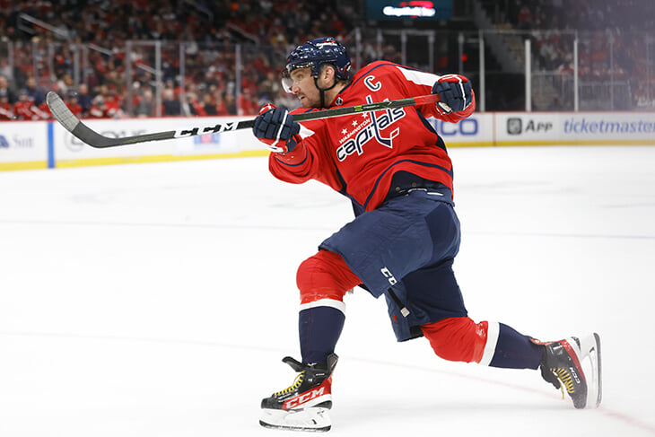

Новости

Овечкин на высоте!!!
Овечкин не забил, но опять кого-то догнал – Дацюка по передачам. Он теперь четвертый среди русских в истории

Станислав Поздняков об антиковидных мерах на Играх-2022: «Ограничения будут более жесткими, чем в Токио. Думаю, организаторы Пекина решили не испытывать судьбу»
«Стрелять буду до пенсии». Виталина Игоревна Бацарашкина.